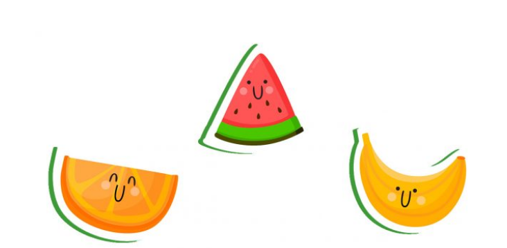
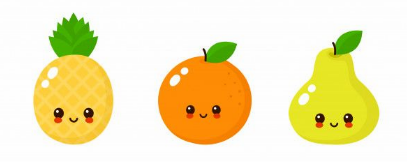
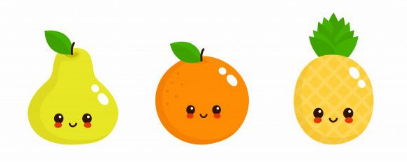

Fresh Zone е верига от заведения във Варна, предлагащи разнообразие от здравословни сокове, смутита, ободряващи напитки, свежи салати, вкусни сандвичи, топли кроасани, закуски с кисело мляко, протеинови барчета и десерти. Нашата концепция е да бъдем място за здравословната част от твоя ден, където да се насладиш на продукти с много витамини, полезни вещества и най-високо качество. Вземи си кратка почивка от натовареното ежедневие и се наслади на твоя сок или смути в приятната атмосфера на нашите заведения.

Във Fresh Zone качеството е безкомпромисно и затова говорят стотиците положителни отзиви от нашите клиенти. Внимателно подбираме плодовете и зеленчуците, с които приготвяме сокове и смутита. Рецептите ни са изпитани и балансирани до перфекционизъм, защото пропорциите са изключително важни, що се касае до перфектния вкус на нашите напитки.
Храни се разумно, пий полезни напитки и живей здравословно с Fresh Zone! Нашата мисия е да ти предоставим възможност да направиш здравословен избор всеки ден.
"Fresh Zone" започва своята дейност през 2014 година с амбицията да донесе на варненци свежи и висококачествени продукти от природата. Началото беше поставено с малък обект в централната част на града, който бързо се утвърди като любимо място за всички, които търсят здравословни храни и напитки.
Въз основа на силната си визия за качествени и натурални продукти, Fresh Zone започна да разширява своето присъствие, отваряйки нови обекти и увеличавайки асортимента си. През годините марката се утвърди като лидер на пазара на здравословни храни в региона, предлагайки не само свежи сокове, смутита и салати, но и разнообразие от органични продукти, супер храни и бутилирани води.
Днес, Fresh Zone е символ на качество и здравословен начин на живот, а мисията на марката е да продължава да предоставя най-доброто на своите клиенти, като същевременно осигурява екологични и устойчиви практики в бизнеса си.
Отличие за качество: През 2015 година Fresh Zone получава награда за най-добро заведение, предлагащо здравословни храни в България, благодарение на високото качество на продуктите и уникалните си рецепти.
Разширяване на мрежата: През 2018 г. компанията открива нови обекти в ключови локации, като става част от международна верига от магазини за здравословни храни, което е огромен успех за марката.
Партньорства с водещи марки: В партньорство с глобални компании като Illy, Devin и Be Pure, Fresh Zone започва да предлага на своите клиенти висококачествени напитки и продукти, които поддържат здравословния начин на живот.
Екологични инициативи: През 2020 година Fresh Zone стартира кампания за намаляване на пластмасовото замърсяване, като започва да предлага продукти с минимално опаковане и да използва рециклируеми материали в своята верига.
Интернационално признание: През 2023 година Fresh Zone беше признат за един от лидерите на пазара на здравословни храни в Балканския регион, благодарение на иновациите и качеството на предлаганите продукти.
Инициативи за здраве и образование: Компанията активно участва в социални и образователни проекти, които насърчават здравословното хранене и устойчивото земеделие в България и извън нея.
